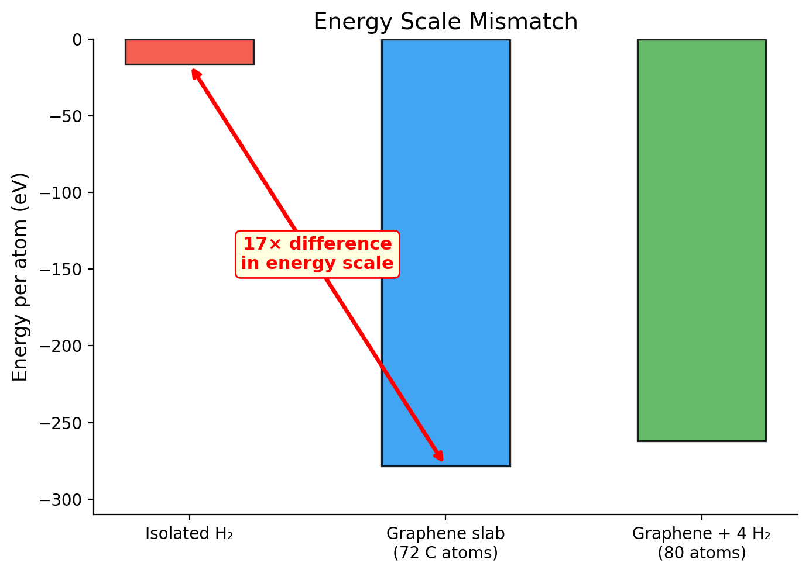

Energy Scale Traps#
I trained a model on graphene + H2 gas. The loss curve was textbook perfect. Smooth exponential decay, training and validation tracking each other step for step, force RMSE settling below 50 meV/A. I froze the model feeling good about life.
Then I ran dp test on each subsystem separately.
Graphene slab? 2 meV/atom energy error, 30 meV/A force error. Excellent. Isolated H2? 40 meV/atom energy error, 350 meV/A force error. The model had no idea what a hydrogen molecule looked like. Despite training on hundreds of H2 frames. The overall loss hid the disaster because the slab data drowned out everything else.
This is the energy scale trap. It doesn’t crash. It doesn’t warn you. It sits in your training set, patient and quiet, and waits for you to trust the aggregate metrics. Then it ruins three weeks of production MD when you finally test the subsystem you actually care about. This is the part the docs skip. Let me show you exactly how it works, so you can catch it before it catches you.
The Problem: -16 vs. -278 eV/atom#
Here are the real numbers from our project. Look at the per-atom energies and let them sink in.
System |
Formula |
Atoms |
Total Energy (eV) |
Per-Atom Energy (eV/atom) |
|---|---|---|---|---|
Isolated H2 |
H2 |
2 |
~-32 |
~-16 |
Bare graphene |
C72 |
72 |
~-20,000 |
~-278 |
Graphene + 4 H2 |
C72H8 |
80 |
~-20,128 |
~-252 |
Graphene + 8 H2 |
C72H16 |
88 |
~-20,256 |
~-230 |
Isolated H2: -16 eV/atom. Graphene: -278 eV/atom. That is a 17x difference.
Now look at the mixed systems. As you add more H2 to graphene, the per-atom energy drifts from -278 toward -252 (80 atoms) and -230 (88 atoms). The hydrogen dilutes the per-atom energy because each H contributes far less than each C. But even with 16 hydrogen atoms in the system, carbon still dominates everything.
The model sees that imbalance. And it makes a perfectly rational choice: pour all its capacity into getting carbon right, because that is where the loss reduction lives.
Think of it like grading kindergarten and PhD exams on the same curve. The PhD answers are worth 278 points each. The kindergarten answers are worth 16. The grader (your optimizer) focuses on the questions worth 278 points, because getting those even slightly wrong tanks the total score. The kindergarten answers? Rounding error. Irrelevant to the final grade.
Warning: Energy Scale
The per-atom energy of isolated H2 (~-16 eV/atom) and a graphene slab (~-278 eV/atom) differ by a factor of 17. A neural network potential trained on both will prioritize getting graphene right (larger absolute values mean larger contributions to RMSE) and effectively ignore H2. The optimizer is not broken. It is doing exactly what you told it to: minimize total RMSE. The problem is that total RMSE does not care about your physics.
Why the Model Can’t Fit Both#
Let me trace through the math of what happens inside the network. This is not abstract. This is the specific mechanism that kills your H2 accuracy.
DeePMD uses per-atom energy decomposition. The model predicts a per-atom energy \(\epsilon_i\) for each atom, and the total energy of a frame is the sum:
During training, the energy component of the loss function looks like:
Now think about a single training step. The model sees a mini-batch containing one graphene frame (\(E \approx -20{,}000\) eV) and one H2 frame (\(E \approx -32\) eV). The gradient from the graphene frame is proportional to the error times the energy magnitude. The gradient from the H2 frame is a rounding error by comparison.
Here’s where it gets concrete. If the model predicts the carbon per-atom energy with 0.1% error, that is 0.1% of -278 eV = 0.278 eV/atom error on carbon. Meanwhile, the entire H2 binding energy you are trying to capture is 0.05-0.1 eV. The carbon “noise” is 3-5x bigger than the hydrogen “signal.” The optimizer chases the carbon error because that is where the loss reduction lives. The hydrogen signal gets trampled.
Are you seeing this? The model isn’t broken. The optimizer isn’t broken. The math is doing exactly what you asked. You just asked the wrong question.
Key Insight
Here is something that confused me until I actually sat down and thought through it: per-atom forces on hydrogen in isolated H2 and per-atom forces on carbon in graphene are in the same ballpark. Both on the order of 0.1-1.0 eV/A. Forces are relatively scale-invariant. Energies are not.
During early training, when force prefactors dominate the loss (start_pref_f = 1000), both systems get reasonable attention. The model learns about H2 and graphene in roughly equal measure. But as training progresses and energy prefactors ramp up (limit_pref_e = 2.0), the slab energies dominate the energy loss completely. The H2 energy signal gets drowned out.
This is why your force RMSE on the combined test set looks fine while the per-subsystem breakdown reveals the catastrophe.
Let me put it even more bluntly. The loss function treats all per-atom energy errors equally. But a 1 meV/atom error on C in a 72-atom slab creates a 72 meV total energy error. A 1 meV/atom error on H in a 2-atom molecule creates a 2 meV total energy error. The carbon-dominated system has 36x more leverage on the total loss. The model will sacrifice H2 accuracy every single time to shave a tiny fraction off the slab error. That is not a bug. That is the math.
Diagnosing the Problem#
You will not catch this by looking at the overall dp test output. I cannot stress this enough. The combined metrics average over all frames, and the slab frames dominate. Here is what it actually looks like.
Grab your terminal.
$ dp test -m graph.pb -s all_test_data/ -n 500 -d test_all
# Energy RMSE/atom: 3.2 meV <-- looks fine!
$ dp test -m graph.pb -s test_data/graphene_bare/ -n 100 -d test_graphene
# Energy RMSE/atom: 1.8 meV <-- great!
# Force RMSE: 28 meV/A <-- great!
$ dp test -m graph.pb -s test_data/graphene_4h2/ -n 100 -d test_4h2
# Energy RMSE/atom: 4.1 meV <-- okay, getting worse
$ dp test -m graph.pb -s test_data/h2_gas/ -n 100 -d test_h2
# Energy RMSE/atom: 38.7 meV <-- TERRIBLE
# Force RMSE: 350 meV/A <-- TERRIBLE
See the trajectory? 1.8 meV for the slab. 4.1 meV for slab+H2. 38.7 meV for isolated H2. The error grows as the hydrogen fraction increases. And the aggregate metric (3.2 meV) hides the entire story because the slab frames outnumber and outweigh everything else.
That first number, the 3.2 meV aggregate, is a liar. A polite, well-formatted liar.
Common Mistake
Never trust an aggregate dp test result for a multi-system training set. Always test each subsystem separately. The overall RMSE is a weighted average that buries catastrophic failure on minority systems.
Concrete diagnostic: if your force RMSE on the minority system (H2) is 5-10x worse than on the majority system (graphene slab), you have an energy scale problem. Not “might have.” Have.
Typical symptoms:
Overall force RMSE: 40 meV/A (looks great)
Slab force RMSE: 30 meV/A (excellent)
H2 force RMSE: 350 meV/A (catastrophic)
The model predicts H2 bond lengths that are physically wrong
MD shows H2 molecules behaving erratically while the slab dynamics look fine
If your per-subsystem numbers look like that, keep reading. There are solutions. None of them are magic. But they work.
The Visual#
{kind=link}

Fig. 33 Per-atom energy comparison across subsystems. The 17x gap between isolated H2 (~-16 eV/atom) and graphene slab (~-278 eV/atom) means the model’s energy loss is dominated entirely by slab configurations. The mixed systems fall in between but are still much closer to the slab scale.#
That bar chart tells the whole story. The H2 bar is barely visible next to the slab. The optimizer treats H2 energies as noise. Because compared to -278 eV/atom, -16 eV/atom basically IS noise.
Solutions#
No perfect answer here. Every approach has trade-offs. I’ve tried all of these. Here are the real options, ordered by how well they work in practice.
Solution 1: Use atom_ener to Shift Per-Atom Reference Energies#
This is the closest thing to a silver bullet.
DeePMD-kit supports atom_ener in the fitting network configuration. It is a per-element energy shift that gets subtracted before training and added back during prediction:
"fitting_net": {
"neuron": [240, 240, 240],
"resnet_dt": true,
"atom_ener": [-278.0, -16.0]
}
This tells the model: “Carbon atoms have a baseline energy around -278 eV. Hydrogen atoms have a baseline energy around -16 eV. Do not learn those baselines. Learn the deviations from them.”
Instead of predicting per-atom energies of -278 and -16 from scratch, the model only needs to predict small corrections around zero. Both subsystems now contribute comparably to the loss because the corrections are on the same scale. That 17x mismatch collapses to maybe 2x in the residuals. Manageable.
And that’s the whole trick. Shift the reference. Collapse the scale. Let the model focus on the physics, not the bookkeeping.
Key Insight
atom_ener shifts the per-atom energy references so the model learns residuals instead of absolute energies. The residuals live on the same scale regardless of the element.
To get the reference values: compute the average per-atom energy for each element from your training data, or run single-atom / isolated-molecule DFT calculations. The values do not need to be exact. They are reference shifts, not constraints. Getting them within 10% of the true per-atom energy is good enough. What matters is collapsing the scale difference, not nailing the absolute number.
Solution 2: Train Separate Models for Separate Energy Scales#
The cleanest approach when the physics allows it: do not force one model to span incompatible energy scales.
Model A: graphene slab + graphene with adsorbed H2 (per-atom energies: -278 to -230 eV/atom)
Model B: isolated H2 gas phase (per-atom energy: ~-16 eV/atom)
Each model sees a narrow energy range and fits it well. No competition. No trade-offs.
When this works: You only need each model in its own domain. Studying adsorbed H2 on graphene? Use Model A. Studying gas-phase H2 separately? Use Model B. The models never need to coexist in one simulation.
When this fails: Reactive systems. Adsorption/desorption processes. Anything where atoms transition between the two energy-scale regimes during a single MD trajectory. If H2 desorbs from the surface and flies into the vacuum, you need one model that handles both. Two models cannot hand off mid-trajectory.
Solution 3: Add Energy Shift Corrections to Training Data#
Apply element-dependent energy shifts to your training data before training, so the raw per-atom energies fed to DeePMD are on comparable scales:
import dpdata
import numpy as np
# Reference energies per atom (from isolated atom DFT)
E_ref = {"C": -278.0, "H": -16.0}
# Subtract reference energies from each frame
sys = dpdata.LabeledSystem("./qe_output", fmt="qe/pw/scf")
for i in range(len(sys)):
n_C = np.sum(sys["atom_types"][i] == 0)
n_H = np.sum(sys["atom_types"][i] == 1)
sys["energies"][i] -= n_C * E_ref["C"] + n_H * E_ref["H"]
This achieves the same effect as atom_ener but at the data level. The downside: you must apply the reverse shift when interpreting model predictions. Every time you add new training data, you must apply the same shift consistently. More bookkeeping. More chances for errors. One forgotten shift corrupts the entire training set.
Prefer atom_ener if your DeePMD version supports it. Seriously. This approach is the manual transmission version of the same idea. It works, but you will eventually forget to shift a dataset, and then you will have a very confusing afternoon.
Solution 4: Restrict Training to Comparable Energy Scales#
The pragmatic approach: if isolated H2 gas is causing problems, remove it from the training set. Train the model only on systems where the energy scales are comparable.
For our project, graphene slab data (-278 eV/atom) and graphene + 12H2 data (-212 eV/atom) differ by a factor of 278/212 = 1.3x. The model can handle that. It is the isolated H2 at -16 eV/atom that is the 17x outlier.
The trade-off is real. The model knows nothing about isolated H2 physics. If an H2 molecule desorbs from the surface during production MD and drifts into the vacuum region, the model is extrapolating. You need to ensure your simulation conditions keep H2 near the surface, or accept that far-field H2 behavior is approximate at best.
Solution 5: Weight Different Systems Differently (Batch Sizes)#
Adjust init_batch_size so that minority systems appear more frequently during training:
"init_batch_size": [32, "auto", "auto", "auto", "auto",
"auto", "auto", "auto", "auto", "auto",
"auto", "auto", "auto", "auto", "auto", "auto"]
Setting a higher explicit batch size for the H2 dataset means the model cycles through H2 frames faster. With "auto", DeePMD-kit already sets batch sizes inversely proportional to atom count (small systems get larger batches). You can push this further with manual values.
I’m going to be honest: this is a band-aid, not a fix. It increases the frequency of the small H2 gradients to partially compensate, but the fundamental gradient-magnitude problem remains. The slab gradients are still larger in absolute terms. The model still prefers to reduce slab error over H2 error. Use this alongside atom_ener, not instead of it.
A Decision Framework#
Situation |
Best Approach |
|---|---|
Systems never interact in simulation |
Separate models |
Systems interact, DeePMD >= 2.0 |
|
Quick fix, can tolerate approximate minority system |
Restrict to comparable scales |
Large mismatch, complex multi-system workflow |
|
Legacy workflow, cannot change model config |
Energy shift post-processing on data |
What We Actually Did#
For the graphene + H2 project, we used a combination approach. No single solution was sufficient:
Included the H2 gas data but kept it minimal (one
set_2atomsdataset, roughly 50 frames from the H2 bond-length scan)Used
"auto"batch sizes so the small H2 system got proportionally more training iterationsAdded gap-filling data at intermediate compositions (graphene + 4H2, 8H2, 12H2) to bridge between slab and gas energy scales
Accepted that isolated H2 energetics would be approximate, and validated carefully on the subsystems that actually mattered for our scientific question
The result after dpgen convergence + gap-filling:
Subsystem |
Energy RMSE/atom (meV) |
Force RMSE (meV/A) |
|---|---|---|
Bare graphene (72 atoms) |
1.2 |
28 |
Graphene + 4H2 (80 atoms) |
2.1 |
35 |
Graphene + 8H2 (88 atoms) |
2.8 |
42 |
Graphene + 12H2 (96 atoms) |
3.4 |
48 |
Isolated H2 gas (2 atoms) |
22.3 |
145 |
Check the numbers. The more hydrogen in the system, the worse the per-atom error gets. And isolated H2 is an order of magnitude worse than the slab. The model tried to fit both scales and made a choice. It chose carbon. Every time.
For our scientific question (H2 physisorption on graphene surfaces), the first four rows are what matter. Those are solid. The isolated H2 accuracy is a compromise we made deliberately, not one we discovered accidentally. That distinction matters more than the numbers themselves.
The Deeper Lesson#
Key Insight
Energy scale traps are a symptom of something bigger: your model learns what your loss function rewards. If the loss function cannot distinguish between “good enough on everything” and “great on slabs, terrible on molecules,” the model takes the path of least resistance. It optimizes what is easiest to optimize. Every single time.
This applies beyond energy scales. Any time your training data has an imbalanced distribution (different system sizes, different frame counts per system, different difficulty levels), the model will learn the easy majority and neglect the hard minority. That is not a bug. That is gradient descent doing its job. Your job is to make sure gradient descent’s job aligns with your scientific question.
Match your model to your question. A universal potential that handles every possible configuration is a noble goal. It is also, for most practical projects, unnecessary. A model that is excellent for the specific conditions you are studying is sufficient and achievable. Do not let the perfect be the enemy of the publishable. But also do not pretend the model is good at something you never validated.
Prevention: Check Scales Before Training#
Before you write param.json, compute per-atom energies for all your systems. This takes five minutes. Five minutes that will either confirm you’re fine or save you three weeks of wasted compute.
# Quick check: run QE on each system type and compute E/N_atoms
# H2: E_total / 2 atoms = ?? eV/atom
# Bare graphene: E_total / 72 atoms = ?? eV/atom
# Graphene + H2: E_total / 80 atoms = ?? eV/atom
If the per-atom energies differ by more than a factor of roughly 5, you have an energy scale problem. Plan for it upfront. Choose your solution from the options above. Set up atom_ener. Decide which subsystem accuracy you are willing to sacrifice. Do this before you start training, not three weeks later when the H2 forces come back at 350 meV/A and you are wondering what went wrong.
I learned this the expensive way. You don’t have to.
Always test subsystems independently. Always check per-atom energy scales before training. Always match your accuracy requirements to the specific question you are asking.
Why Our Tutorial Examples Avoid This
Our Ar model is single-element. All frames have per-atom energies around -1294 eV / 32 atoms ≈ -40.4 eV/atom. No scale mismatch. Our water model is single-phase liquid. All frames have similar per-atom energies. Neither system has the multi-component energy scale trap. But the moment you move to a research system with mixed phases (slab + gas, bulk + surface, crystal + melt at very different densities), this trap is waiting for you.